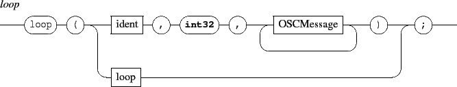

Next: 16.2 Variables
Up: 16. Scripting
Previous: 16. Scripting
Contents
Index
16.1 Loops
The loop operation is defined as follows:

It iterates the enclosed messages, which may refer to the current iteration using ident. A reference to the current iteration has the following form:

Depending on the current context, it is expanded as a string, int32 or float32 parameter:
- an iteration reference found in an OSC address is expanded as a string,
- an iteration reference found in a parameter is expanded as:
- an int32 when the parameter contains only numbers,
- a float32 when it contains numbers and a dot,
- otherwise as a string.
An iteration reference is not allowed in the message string and should trigger a syntax error.
Example:
loop(i, 3,
/ITL/scene/rect%i set 'rect' 0.1 0.1;
/ITL/scene/rect%i x '0.%i';
);
|
Grame - Interlude project [ANR-08-CORD-010]